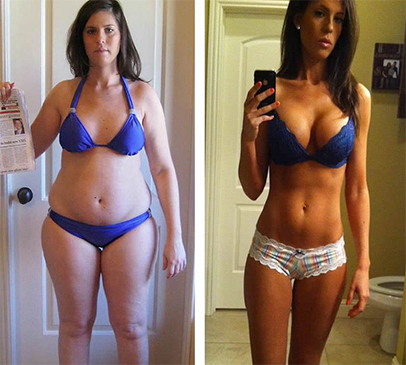
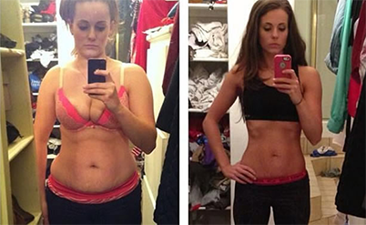

Order your bottle of Pure White Kidney Bean Extract Get FREE Processing by Clicking Here Special Offer Expires: Thursday, June 4, 2015Wednesday, March 25, 2015Tuesday, March 24, 2015 How Oprah Winfrey Dropped 4 Dress Sizes:
Kenna Shell used Oprah’s method to lose 41.7 lbs in just 2.5 months.
Well, we here on the Doctors were a little skeptical of this Pure White Kidney Bean Extract. Even after pouring though mountains of research. While I had an educated opinion, I still had no personal proof that the Pure White Kidney Bean Extract option was worth the time. So, with my editors blessing, I decided to go out and put the product to the test myself. What better way to find out the truth that to conduct my own study?
Oprah recently revealed that the Pure White Kidney Bean Extract diet was the "Dirty Little Diet Secret" she had been using for over a year. The results were unbelieveable: "I lost 17lbs in 4 weeks with No Special Diet, No Intense Exercise!"
The benefits of the Pure White Kidney Bean Extract beat all of our initial skepticism. We found the diet not only helped with weight loss and getting rid of belly fat, but it seemed to boost energy levels, and also helped Oprah sleep better and to wake-up more rested.
~ Oprah Winfrey
«The Magic Weight Loss Cure for Every Body Type» - Dr.Oz.
To get started, I volunteered to be the guine a pig. I applied online for a bottle of Pure White Kidney Bean Extract. Pure White Kidney Bean Extract is one of the most credible and trustworthy diet supplement suppliers on the market. It included a 100% Money Back Guarantee of the product and it did not try to fool me into agreeing to additional hidden offers. Another reason why I chose Pure White Kidney Bean Extract is because it is the most concentrated and purest Pure White Kidney Bean Extract on the market. This would give me the most accurate results for my test.
As a mom of 3, I juggle work, kids, and all of life's other stresses on a daily basis. I've had extra weight on me ever since my first child, but no matter how hard I tried there was just never enough time to get out to the gym. A friend of mine bought me the Pure White Kidney Bean Extract - I couldn't believe it when I started dropping the weight! Thanks Pure White Kidney Bean Extract - You're a real life saver!
~ Kristy Miami, FL
Before & After my 9 Week Test - 36 lbs LOST! - Read Week by Week Below
*Sponsored Content Provided by Pure White Kidney Bean Extract*
• In a study published in the journal Lipids in Health & Disease, subjects taking Pure White Kidney Bean Extract lost an average of 17 pounds in 28 days without diet or exercise. • Pure White Kidney Bean Extract contains no stimulants. • Pure White Kidney Bean Extract has been found to increase metabolism, boosting weight loss by more than 800%. • Studies have shown a 39% reduction in cholesterol and an average 2 inch reduction in belly fat within 28 days. Pure White Kidney Bean Extract has also been clinically proven to: • Helps Eliminate Bad Toxins That Have Built Up Over the Years • Removes 'Sludge' From the Walls of the Colon • Helps Get Rid of Gas and Bloating • Helps Regulate the Metabolism My 9 Week Test: Pure White Kidney Bean Extract & Step 2 Name The Pure White Kidney Bean Extract arrived within 4 days of having placed my order online for the trial supplies. 1. Take one Pure White Kidney Bean Extract pill per day (in the morning) The bottles I received held two months worth of pills which worked out perfect as I was to follow the supplement routine for 9 weeks time and document my progress throughout.